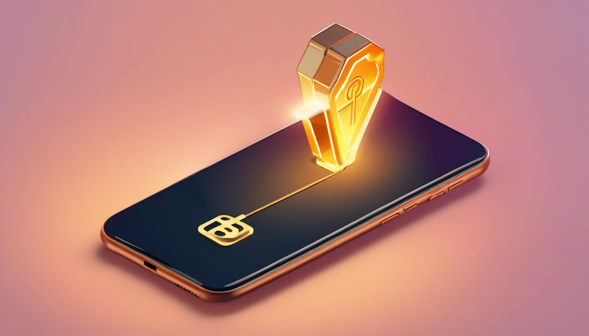

Your First BSV Wallet: A 5-Minute Guide for Normal People

You want to anchor something on the blockchain. A photo. A song. A contract.
But you've never touched crypto. You don't have a "wallet." You don't know what a WIF is. You don't know where to get BSV.
That's fine. This guide gets you from zero to "I anchored my first file on the blockchain" in about 5 minutes. No jargon. No math. Just steps.
What Is a Wallet? (It's Not What You Think)
A crypto wallet is not a physical thing. It's not a bank account. It's not an app that "holds" your coins.
A wallet is just two strings of characters:
- Your address (starts with
1) — like your bank account number. People send BSV to this. - Your private key / WIF (starts with
L,K, or5) — like your password. Only you should have this.
That's it. That's the whole wallet. Two strings. One to receive, one to prove it's yours.
When you "log in" to Proof of Creation, you're just showing the blockchain "hey, I own this address" by signing a message with your private key. No password. No email. No account. Just math.
Step 1: Create Your Wallet (1 minute)
The easiest way: go to ds-da.ca/proof + click "Create Wallet". It generates your address + WIF right in your browser. No app to download, no account to make.
- You'll get an address (starts with
1) — where people send you BSV - You'll get a WIF (starts with
L,K, or5) — your private key / password - Write down both. The WIF is your password. Don't share it. Don't lose it.
Prefer a phone wallet? HandCash (iPhone) / HandCash (Android) is great for storing + buying BSV. Create a wallet there + write down the 12-word backup phrase. Note: HandCash mobile does NOT show your WIF — use the "Create Wallet" button on the proof page for that, or use HandCash's address to fund a wallet you created on the site.
Step 2: Get Some BSV (2 minutes)
You need a few cents of BSV to anchor a file. That's it. A small photo costs ~500 sats (a fraction of a cent). A song costs ~2,000 sats (a few cents).
Option 1: Buy in the HandCash app (easiest) - In HandCash, tap "Buy" - It uses Simplex — you pay with a credit/debit card - Buy $5 worth of BSV (you'll only use a fraction of it) - Done. BSV is in your wallet.
Option 2: Get BSV from a friend - If you know someone with BSV, send them your address - They send you a few cents - Done.
Option 3: Swap crypto you already have - If you have BTC, ETH, or other crypto, use SwapSpace to swap it for BSV - No account needed. Paste your HandCash address. Send the crypto. Get BSV.
How much do you need?
| What you're anchoring | Cost (approx) |
|---|---|
| Small photo (100KB) | ~500 sats |
| Medium photo (2MB) | ~5,000 sats |
| Song (5MB MP3) | ~10,000 sats |
| Video (50MB) | ~100,000 sats |
That's fractions of a cent to a few cents in real money. The blockchain is incredibly cheap for data.
Step 3: Anchor Your First File (2 minutes)
- Go to ds-da.ca/proof
- Click "Login" (top right)
- Paste your WIF in the box
- Enter a display name (your name, your handle, whatever)
- Click "Sign + Login"
- You're in. The dashboard loads.
- Go to the Anchor view
- Upload a file (drag + drop, or browse)
- Pick a tier (Basic = hash only, Premium = full file on-chain)
- You'll see a QR code + an address + an amount
- Send that amount of BSV from your HandCash wallet to that address
- Paste the transaction ID (txid) from HandCash into the box
- Wait for the block confirmation (~10 minutes)
- Done. Your file is anchored on the BSV blockchain. Forever.
Step 4: Verify It (30 seconds)
Go to your proof page. Anyone in the world can open it + verify: - The file hash matches - The transaction is on the BSV blockchain - The timestamp is permanent
No login. No trust in us. Just the blockchain.
FAQ
"Is my WIF safe?" Your WIF is your private key. Anyone with it can spend your BSV. Don't share it. Don't email it. Don't screenshot it and leave it on your desktop. HandCash stores it on your phone, encrypted. When you paste it into Proof of Creation, it's sent over HTTPS (encrypted) + used to sign a message — it's not stored on our server.
"What if I lose my phone?" Your 12-word backup phrase restores your wallet. Write it down. Put it somewhere safe. Not in a photo in your phone (ironic, but true).
"Do I need a lot of BSV?" No. A few cents is enough to anchor several files. The blockchain is incredibly cheap for data.
"Can I use this on a computer?" Yes. Proof of Creation works in any browser. You just need your WIF + a BSV address.
"What if I want to anchor a lot of files?" There's an API. Generate an API key in your dashboard + use it from your own scripts. See the API docs.
The Big Picture
You just did something that's basically impossible to undo:
- You created a file
- You proved you had it at a specific time
- The proof is on a decentralized blockchain
- No company can delete it
- No server can lose it
- No government can seize it
- It will outlive your phone, your computer, + probably your grandchildren's phones
The blockchain is the notary. The hash is the stamp. The math is the trust.
Dream Syndicate Digital Assets — New Brunswick, Canada. ds-da.ca/proof
Tip jar: 14nn7V37RkgaYjieZQeafeYeyeWxgkJTsQ